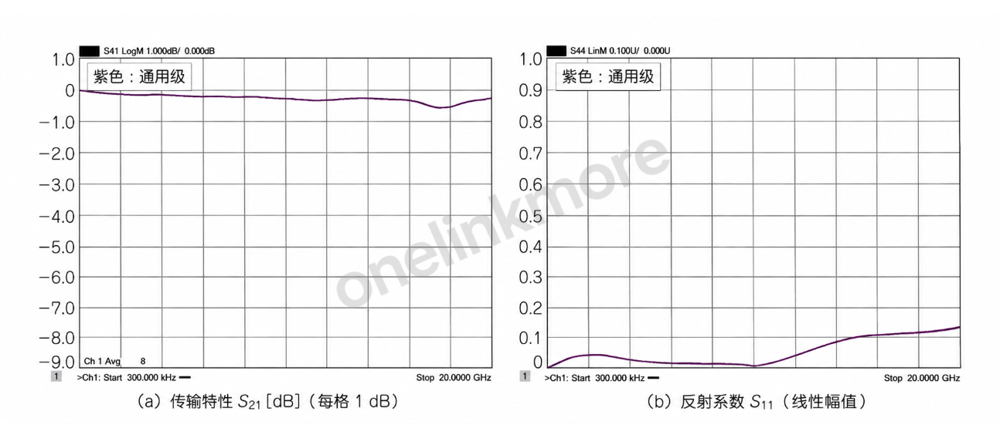

标称阻抗
50 Ω
RF CONNECTOR / PRODUCT SPECIFICATION
SMA 转 N 型射频转接器
OL0069 是 SMA 转 N 型射频转接器。以下数值来自贵司已确认适用于 OL0069 的参数表。原表的插入损耗频段重复，故暂不发布其限值；测试图未标测试条件，不能据此宣称 20 GHz 额定工作能力。接口公母配置仍以正式图纸为准。

CORE SPECIFICATIONS
标称阻抗
50 Ω
额定频段
DC–6 GHz
驻波比（VSWR）
≤1.20:1，DC–6 GHz
绝缘电阻
≥5,000 MΩ
工作温度
−65 至 +155 °C
TECHNICAL SPECIFICATIONS
| 参数 Parameter | 规格 Specification |
|---|---|
| 电气参数 | |
| 标称阻抗 | 50 Ω |
| 额定频段 | DC–6 GHz |
| 驻波比（VSWR） | ≤1.20:1，DC–6 GHz |
| 分段驻波比 | ≤1.15:1，DC–3 GHz；≤1.25:1，3–6 GHz |
| 6 GHz 单点驻波比 | ≤1.15:1 |
| 回波损耗（原表未标各值对应频段） | ≥23.1 / 20.8 / 19.1 dB |
| 绝缘电阻 | ≥5,000 MΩ |
| 介质耐压 | 1,000 V |
| 额定工作电压 | 335 V RMS |
| 接触电阻 | 中心 ≤1.5 mΩ；外导体 ≤0.5 mΩ |
| 机械与环境参数 | |
| 拧紧扭矩 | SMA 端 0.56 N·m；N 端 1.36 N·m |
| 插拔寿命 | 500 次 |
| 工作温度 | −65 至 +155 °C |
| 外形尺寸 | |
| 总长 | 27.7 mm |
| 最大外径 | Ø22.0 mm |
| 六角对边 | 20.0 mm |
| 图纸公差 | ±0.1 mm |
TEST CURVES

CONTACT
电话： 13352990798
微信： YILIANDUO-RF